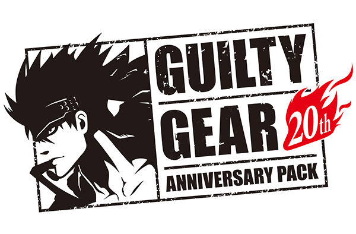

Guilty Glea
Hello and welcome to Guilty Glea, a fan site for all fans of Guilty Gear. This is a passion project by the fans, for the fans, showcasing all the latest artwork, news and interviews. With a new game coming out soon, now is the perfect time to dive into this legendary series' aesthetic and more. Keep in mind that this is NOT for the competitive community. Sites like Dustloop and mobile apps like Discord already exist for that purpose. This is purely for the aesthetic and visuals for the series.
There is more to come, so please stay tuned as we are compiling all the resources for your viewing pleasure.
